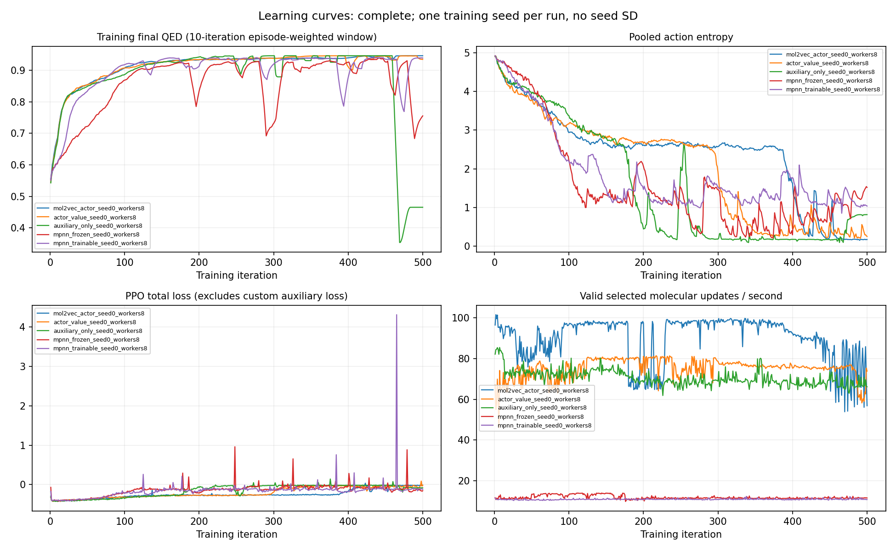
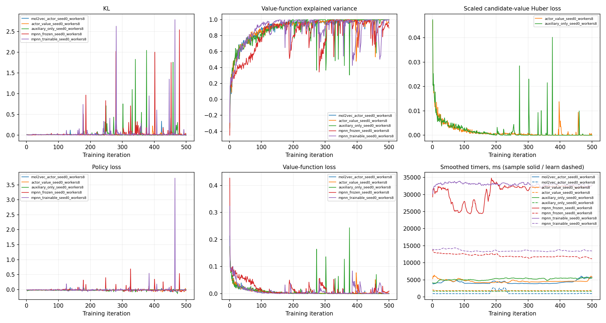
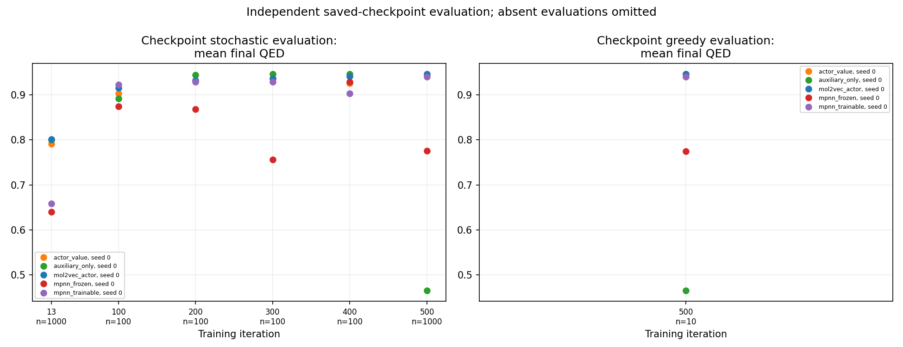

COMPLETE · Completed training runs: 5 / 5 · Expected iterations per run: 500 · captured 2026-10-16T07:41:40.480846+00:00
Source sweep: /home/yamada/Projects/graph-decomposition-reassembling/artifacts/experiments_learning500_store16g/sweep_2026-10-16_00-44-39-465181
Evaluation state: complete ·
Complete extracted data and provenance (JSON)
| Run (n=1) | State | Iterations | Whole training QED | Last-50 training QED | Last-50 observed range | Whole updates/s | After first 3 updates/s | Last-50 entropy | Last-50 KL | Last-50 VF explained var | Last-50 U loss | Steady sample ms | Steady learn ms | GPU peak MiB |
|---|---|---|---|---|---|---|---|---|---|---|---|---|---|---|
| mol2vec_actor_seed0_workers8 | complete | 500/500 | 0.921 | 0.945 | 451–500 | 88.48 | 88.42 | 0.239 | 0.021 | 0.996 | — | 4300.1 | 1085.1 | 8255.3 |
| actor_value_seed0_workers8 | complete | 500/500 | 0.921 | 0.941 | 451–500 | 74.89 | 75.01 | 0.330 | 0.017 | 0.973 | 0.000 | 4616.6 | 1830.9 | 12467.5 |
| auxiliary_only_seed0_workers8 | complete | 500/500 | 0.873 | 0.525 | 451–500 | 70.40 | 70.33 | 0.517 | 0.071 | 0.988 | 0.000 | 5212.8 | 1667.3 | 12469.5 |
| mpnn_frozen_seed0_workers8 | complete | 500/500 | 0.869 | 0.819 | 451–500 | 11.85 | 11.86 | 1.183 | 0.104 | 0.895 | — | 30710.9 | 12053.6 | 8762.0 |
| mpnn_trainable_seed0_workers8 | complete | 500/500 | 0.906 | 0.903 | 451–500 | 10.90 | 10.90 | 1.164 | 0.070 | 0.898 | — | 33001.9 | 13548.6 | 13451.7 |
| Configuration | Train seed | Checkpoint iteration | Mode | Episodes | Mean QED | Unique fraction | Morgan diversity | Result directory |
|---|---|---|---|---|---|---|---|---|
| mol2vec_actor | 0 | 100 | stochastic | 100 | 0.916 | 1.000 | 0.838 | /home/yamada/Projects/graph-decomposition-reassembling/artifacts/experiments_learning500_store16g_evaluation/iteration_100_stochastic |
| actor_value | 0 | 100 | stochastic | 100 | 0.903 | 0.990 | 0.842 | /home/yamada/Projects/graph-decomposition-reassembling/artifacts/experiments_learning500_store16g_evaluation/iteration_100_stochastic |
| auxiliary_only | 0 | 100 | stochastic | 100 | 0.892 | 1.000 | 0.852 | /home/yamada/Projects/graph-decomposition-reassembling/artifacts/experiments_learning500_store16g_evaluation/iteration_100_stochastic |
| mpnn_frozen | 0 | 100 | stochastic | 100 | 0.875 | 0.910 | 0.755 | /home/yamada/Projects/graph-decomposition-reassembling/artifacts/experiments_learning500_store16g_evaluation/iteration_100_stochastic |
| mpnn_trainable | 0 | 100 | stochastic | 100 | 0.923 | 1.000 | 0.725 | /home/yamada/Projects/graph-decomposition-reassembling/artifacts/experiments_learning500_store16g_evaluation/iteration_100_stochastic |
| mol2vec_actor | 0 | 13 | stochastic | 1000 | 0.802 | 1.000 | 0.882 | /home/yamada/Projects/graph-decomposition-reassembling/artifacts/experiments_learning500_store16g_evaluation/iteration_13_stochastic |
| actor_value | 0 | 13 | stochastic | 1000 | 0.791 | 1.000 | 0.879 | /home/yamada/Projects/graph-decomposition-reassembling/artifacts/experiments_learning500_store16g_evaluation/iteration_13_stochastic |
| auxiliary_only | 0 | 13 | stochastic | 1000 | 0.801 | 1.000 | 0.877 | /home/yamada/Projects/graph-decomposition-reassembling/artifacts/experiments_learning500_store16g_evaluation/iteration_13_stochastic |
| mpnn_frozen | 0 | 13 | stochastic | 1000 | 0.640 | 1.000 | 0.878 | /home/yamada/Projects/graph-decomposition-reassembling/artifacts/experiments_learning500_store16g_evaluation/iteration_13_stochastic |
| mpnn_trainable | 0 | 13 | stochastic | 1000 | 0.658 | 1.000 | 0.878 | /home/yamada/Projects/graph-decomposition-reassembling/artifacts/experiments_learning500_store16g_evaluation/iteration_13_stochastic |
| mol2vec_actor | 0 | 200 | stochastic | 100 | 0.932 | 1.000 | 0.825 | /home/yamada/Projects/graph-decomposition-reassembling/artifacts/experiments_learning500_store16g_evaluation/iteration_200_stochastic |
| actor_value | 0 | 200 | stochastic | 100 | 0.932 | 1.000 | 0.814 | /home/yamada/Projects/graph-decomposition-reassembling/artifacts/experiments_learning500_store16g_evaluation/iteration_200_stochastic |
| auxiliary_only | 0 | 200 | stochastic | 100 | 0.944 | 0.150 | 0.350 | /home/yamada/Projects/graph-decomposition-reassembling/artifacts/experiments_learning500_store16g_evaluation/iteration_200_stochastic |
| mpnn_frozen | 0 | 200 | stochastic | 100 | 0.868 | 0.970 | 0.771 | /home/yamada/Projects/graph-decomposition-reassembling/artifacts/experiments_learning500_store16g_evaluation/iteration_200_stochastic |
| mpnn_trainable | 0 | 200 | stochastic | 100 | 0.929 | 0.810 | 0.599 | /home/yamada/Projects/graph-decomposition-reassembling/artifacts/experiments_learning500_store16g_evaluation/iteration_200_stochastic |
| mol2vec_actor | 0 | 300 | stochastic | 100 | 0.936 | 1.000 | 0.829 | /home/yamada/Projects/graph-decomposition-reassembling/artifacts/experiments_learning500_store16g_evaluation/iteration_300_stochastic |
| actor_value | 0 | 300 | stochastic | 100 | 0.937 | 0.640 | 0.722 | /home/yamada/Projects/graph-decomposition-reassembling/artifacts/experiments_learning500_store16g_evaluation/iteration_300_stochastic |
| auxiliary_only | 0 | 300 | stochastic | 100 | 0.946 | 0.020 | 0.238 | /home/yamada/Projects/graph-decomposition-reassembling/artifacts/experiments_learning500_store16g_evaluation/iteration_300_stochastic |
| mpnn_frozen | 0 | 300 | stochastic | 100 | 0.756 | 0.950 | 0.761 | /home/yamada/Projects/graph-decomposition-reassembling/artifacts/experiments_learning500_store16g_evaluation/iteration_300_stochastic |
| mpnn_trainable | 0 | 300 | stochastic | 100 | 0.929 | 0.810 | 0.620 | /home/yamada/Projects/graph-decomposition-reassembling/artifacts/experiments_learning500_store16g_evaluation/iteration_300_stochastic |
| mol2vec_actor | 0 | 400 | stochastic | 100 | 0.941 | 0.580 | 0.669 | /home/yamada/Projects/graph-decomposition-reassembling/artifacts/experiments_learning500_store16g_evaluation/iteration_400_stochastic |
| actor_value | 0 | 400 | stochastic | 100 | 0.926 | 0.130 | 0.385 | /home/yamada/Projects/graph-decomposition-reassembling/artifacts/experiments_learning500_store16g_evaluation/iteration_400_stochastic |
| auxiliary_only | 0 | 400 | stochastic | 100 | 0.946 | 0.020 | 0.238 | /home/yamada/Projects/graph-decomposition-reassembling/artifacts/experiments_learning500_store16g_evaluation/iteration_400_stochastic |
| mpnn_frozen | 0 | 400 | stochastic | 100 | 0.929 | 0.070 | 0.132 | /home/yamada/Projects/graph-decomposition-reassembling/artifacts/experiments_learning500_store16g_evaluation/iteration_400_stochastic |
| mpnn_trainable | 0 | 400 | stochastic | 100 | 0.903 | 0.910 | 0.661 | /home/yamada/Projects/graph-decomposition-reassembling/artifacts/experiments_learning500_store16g_evaluation/iteration_400_stochastic |
| mol2vec_actor | 0 | 500 | greedy | 10 | 0.946 | 0.100 | 0.000 | /home/yamada/Projects/graph-decomposition-reassembling/artifacts/experiments_learning500_store16g_evaluation/iteration_500_greedy |
| actor_value | 0 | 500 | greedy | 10 | 0.946 | 0.100 | 0.000 | /home/yamada/Projects/graph-decomposition-reassembling/artifacts/experiments_learning500_store16g_evaluation/iteration_500_greedy |
| auxiliary_only | 0 | 500 | greedy | 10 | 0.465 | 0.100 | 0.000 | /home/yamada/Projects/graph-decomposition-reassembling/artifacts/experiments_learning500_store16g_evaluation/iteration_500_greedy |
| mpnn_frozen | 0 | 500 | greedy | 10 | 0.775 | 0.100 | 0.000 | /home/yamada/Projects/graph-decomposition-reassembling/artifacts/experiments_learning500_store16g_evaluation/iteration_500_greedy |
| mpnn_trainable | 0 | 500 | greedy | 10 | 0.940 | 0.100 | 0.000 | /home/yamada/Projects/graph-decomposition-reassembling/artifacts/experiments_learning500_store16g_evaluation/iteration_500_greedy |
| mol2vec_actor | 0 | 500 | stochastic | 1000 | 0.946 | 0.003 | 0.232 | /home/yamada/Projects/graph-decomposition-reassembling/artifacts/experiments_learning500_store16g_evaluation/iteration_500_stochastic |
| actor_value | 0 | 500 | stochastic | 1000 | 0.946 | 0.018 | 0.266 | /home/yamada/Projects/graph-decomposition-reassembling/artifacts/experiments_learning500_store16g_evaluation/iteration_500_stochastic |
| auxiliary_only | 0 | 500 | stochastic | 1000 | 0.465 | 0.020 | 0.393 | /home/yamada/Projects/graph-decomposition-reassembling/artifacts/experiments_learning500_store16g_evaluation/iteration_500_stochastic |
| mpnn_frozen | 0 | 500 | stochastic | 1000 | 0.775 | 0.325 | 0.722 | /home/yamada/Projects/graph-decomposition-reassembling/artifacts/experiments_learning500_store16g_evaluation/iteration_500_stochastic |
| mpnn_trainable | 0 | 500 | stochastic | 1000 | 0.940 | 0.074 | 0.504 | /home/yamada/Projects/graph-decomposition-reassembling/artifacts/experiments_learning500_store16g_evaluation/iteration_500_stochastic |


